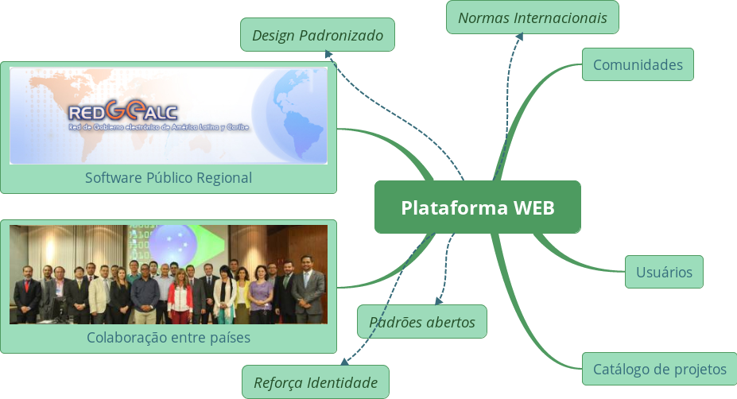
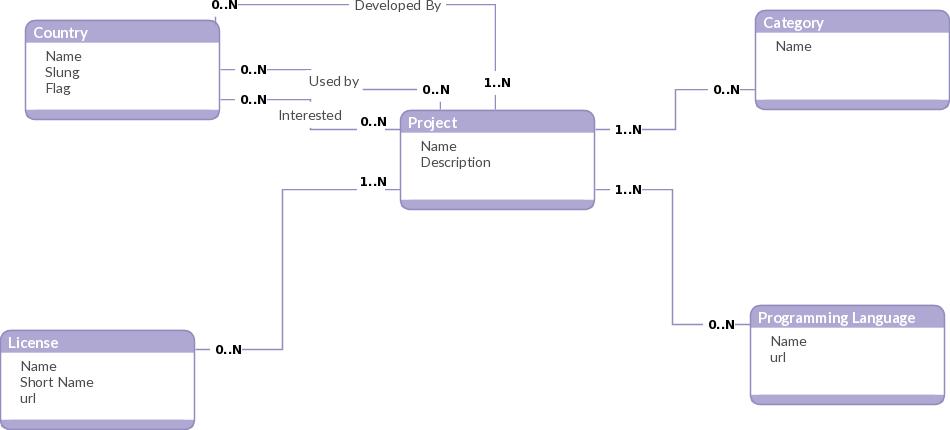

Cuarto taller regional de software público
Red Gealc
Luis Felipe Costa y Henrique Andrade
07 de Septiembre de 2016 - Santo Domingo
## ¿Quien habla?
- Luis Felipe Costa
-
-
-
- Henrique Andrade
-
-
-
##MECANISMO - CONTEXTO
- Rede de Governo Eletrônico da América Latina e do Caribe (Red Gealc)
- Cooperación Técnica de Bienes Públicos Regionales
- Mecanismo colaborativo regional de Software Público
##MECANISMO - CONTEXTO GLOBAL
- Union Europea: Joinup
- Oceania: Openray
- EEUU: Github
##MECANISMO - IMPORTANCIA
- Software Livre
- Open World Forum
- Software Público Brasileiro
“A comunicação em rede transcende fronteiras, a sociedade em rede é global, é baseada em redes globais. Então, a sua lógica chega a países de todo o planeta e difunde-se através do poder integrado nas redes globais de capital, bens, serviços, comunicação, informação, ciência e tecnologia. Aquilo a que chamamos globalização é outra maneira de nos referirmos à sociedade em rede.” Castells
##MECANISMO - OPERACAO
- Modelo Colaborativo de Software Público Regional
##MODELO - HISTÓRICO
“Diagnóstico sobre Software Público na América Latina” realizado por Gimenez e Gascó, por Gimenez e Gascó
- Niveles de Madurez:
- Nivel 1: 8 países
- Nível 1-2: 3 países
- Nível 2: 4 países
- Nível 2-3: 1 países
- Nível 3: 2 países
- Madurez média: 1,6
MODELO - APROBADO
Tercer Taller en Tegucigalpa
MODELO - PROPÓSITO
Propósito: “Construir e aprimorar continuamente uma rede de produção colaborativa de conhecimento para desenvolver, em ambiente público, soluções informatizadas de Tecnologia da Informação direcionadas ao desenvolvimento sustentável (social, econômico e ambiental), através da definição de direitos e deveres dos países que participem do modelo".
MODELO - VISÃO
Vision: "Tener el modelo de produción colaborativo en red através de una plataforma web, adecuado para la sociedad, y como referencia internacional ".
MODELO - DESAFIO
Desafio: “Compreender e aprimorar o modelo do Software Público de modo a torná-lo sustentável”
MODELO - Niveles de aderencia
##Nível 1: Integrante Observador
- País que aderir ao mecanismo da Red Gealc.
- Tem direito a utilizar a Plataforma, mas não tem poder de voto no Comitê Gestor do Modelo.
##Nível 2: Integrante Pleno
- País que assinar o instrumento de adesão do Software Público Regional, pactuando através dela o uso na Plataforma das licenças de software e de marca do modelo e disponibilizando um representante para participar do Comitê Gestor do Modelo.
- Tem direito a voto no Comitê Gestor do Modelo.
- Os Integrantes Plenos poderão expandir seu nível de adesão ao modelo em quatro linhas de atuação não interdependentes
##Nível A: Hospedeiro
- País que disponibilizar infraestrutura local de servidores para replicação da Plataforma.
- Tem direito a uma réplica do conteúdo completo da Plataforma em território nacional mantida pelo modelo.
##Nível B: Divulgador
- País que criar um plano de comunicação para divulgação do modelo em seu território.
- Tem direito a realizar eventos de capacitação, fornecidos pelo modelo, sobre utilização da Plataforma e suas ferramentas, licenças, gestão de comunidades, empreendedorismo com software livre, etc
##Nível C: Microcontratador
- País que disponibilizar recursos financeiros para o serviço de microcontratação do modelo.
- Tem direito a participar da escolha de soluções tecnológicas que serão contratadas através da ferramenta de microcontratação do modelo.
##Nível D: Utilizadores
- País que pactuar o compromisso de utilizar um software publico regional e/ou disponibilizar um software publico regional.
- Tem direito a uma consultoria in loco fornecida pelo modelo para estudo de aspectos legais nacionais e possível necessidade de normatização local para plena utilização do modelo.
##MODELO - Instrumento de adesão de princípios do Software Publico
- conceito de Software Publico
- Missão
- visão
- desafio
- marcas
- governança
- licenças de software
- politicas de uso de marca
- Licença de Software
- GNU GPL v2 (opção ou superior)
- GNU GPL v3 (opção ou superior)
- BSD-3
- Política de uso de Marca de software
- atribuição de origem
- limitação de associação do uso feito com o criador da marca
- utilização apenas junto de versões que estejam disponíveis no
repositório oficial
##MODELO - Governança
- Comitê Gestor
- Até seis representantes dos países integrantes plenos;
- Um representante da sociedade civil indicado pelo comitê;
- Um representante do segmento da indústria de software indicado pelo comitê;
- Um representante de instituição financeira que apoia o modelo;
- Um representante da secretaria técnica da Red Gealc;
- Um representante da equipe gestora indicado pelo comitê.
##MODELO - Equipe Gestora da Plataforma
- Um profissional Administrativo;
- Um profissional especialista em Software Público
- Dois profissionais Técnicos
##MODELO - Coordenador de comunidade
- Criador original do projeto
MODELO - Níveis de Madurez de Comunidades
##MODELO - Níveis de Madurez de Comunidades
- A Categoria "Documentação" possui quatro níveis:
1. Documentação do Software (pelos padrões mínimos estabelecidos pelo grupo de ontem em "dados de software em general")
1. Manual do Usuário
1. Tutoriais multimídia de utilização ( guia de instalação, manual de administração, documentação no código-fonte)
1. Requisitos (software, hardware, perfil técnico)
- A Categoria "Padrões Abertos" possui três níveis:
1. Acessibilidade
1. Interoperabilidade
1. Usabilidade
- A Categoria "Atividade da comunidade" possui dois níveis:
1. Atividade na produção de código ou de texto
1. Atividade na produção de código e de texto
##MODELO - Incubadora de projetos
- Potencializar a criação de projetos com alto impacto social
- Orientar equipe de desenvolvimento para adequar o projeto às especificidades necessárias
- Produzir material de orientação
- Acompanhar e orientar a evolução de cada projeto incubado
- Proporcionar regras claras para o processo de evolução da comunidade
## Funcionalidades
Plataforma
- Internacionalização
- Apresentação do projeto
- Busca de projetos
- Comunidades em destaque
## Funcionalidades
Usuários
- Compartilhar um projeto
- Seguir um projeto
- Enviar códigos para projetos
- Ter um dashboard com informações sobre os projetos que participa
Catálogo de projetos
- Exibir os projetos já existentes em portais nacionais com filtros e categorias para fácil navegação
- Permitir que países integrantes do modelo cadastrem novas soluções
##Quatro níveis de acesso:
Usuário visitante
- Ver a página da Plataforma
- Ver a página de um projeto
- Ver a documentação do projeto
- Ver o código do projeto
- Baixar o código do projeto
Usuário cadastrado
- Criar um projeto
- Colaborar em um projeto
- Seguir um projeto
Gestor da comunidade
- Receber e avaliar contribuições no código do projeto
- Receber e avaliar contribuições na documentação do projeto
- Organizar as demandas e o desenvolvimento do projeto
Gestor da Plataforma
- Aprovar um projeto
- Avaliar um projeto
- Gerir uma comunidade e seus gestores
## Funcionalidades
Comunidade de um projeto
- Gestor da comunidade
- Informações sobre licenças de software e marca utilizadas
- Critérios para a avaliação do software
- Documentação
- Relatos de uso
- Pesquisas
- Artigos
- Fórum multimídia
- Newsletter
- Informações sobre financiamentos
- Fundo de doações
## Funcionalidades
Bazar Público
- Cadastro de Fornecedor (empresa ou pessoa)
- Avaliação Fornecedor
- Cadastro de demanda de contratação
- Micro contratação
- Modelo de contratos de software
- Pagamento integrado
## Funcionalidades
Gamificação
- Avaliação do País
- Avaliação da comunidade
- Avaliação de software
- Avaliação de usuário
- Rankings
- Badges
## Funcionalidades
Capacitação
- Documentação
- Ferramenta de EAD
##Funcionalidades mínimas para primeiras versão
- Plataforma
- Usuário
- Comunidades
##Infraestrutura
Países acolhedores da plataforma
##MODELO - PLANO DE AÇÃO
- [✓] Definir a ferramenta a ser utilizada na plataforma
- [⌛] Quarto encontro do mecanismo
- [⌛] Lançamento da plataforma com catálogo de softwares realizado de maneira manual
- [⌛] Discussão do modelo de sustentabilidade
- [⌛] Discussão do instrumento de adesão ao modelo
- [⌛] Monitoramento das implementações do software SIMPLE na região
- [⌛] Informe referente a oferta e demanda de softwares pelos países
- [ ] Lançamento do instrumento de adesão dos países e modelo de sustentabilidade na IV reunião interministerial da Red Gealc
- [ ] Definição do processo de automatização do catálogo
- [ ] Quinto encontro
Consultoria para construcción de la plataforma de colaboración inicial de Software Público regional
Documento de base de funcionalidades da Plataforma
Definição do que será implementado para que versão inicial da plataforma possa ser utilizada pelos países

## Desarrollo de la Versión Preliminar
- Gitlab:
- Infraestructura
- Configuraciones de usuarios y paises
- Adaptación de la interfaz
- Catálogo de soluciones:
- Modelo de datos
- Interfaz (frontend)
- Backend
- Captura de datos iniciales
- Funciones de registro
##Infraestrutura
- Aplicações Web: catálogo e interface do GitLab, escritas usando a linguagem Ruby e o
framework Rails;
- Banco de dados: PostgreSQL
- Servidor de correio eletrônico: a plataforma necessita de acesso a um servidor SMTP
para o envio de emails.
- LDAP (opcional)
- Linux Containers gerenciados pelo Docker
- Hardware
- 2 CPUs
- 2GB de memória RAM
- 40GB de armazenamento (se possível SSD)
Modelo de Datos del Catálogo

## Carga inicial de Datos
- Países
- Lenguajes de programación
- Licencias de software libre
- Categorías
## Demonstración de la Interfaz
/index
## Demonstración de la Interfaz
/organization
## Demonstración de la Interfaz
/project
## Demonstración de la Interfaz
/catalog
## Demonstración de la Interfaz
/catalog/country
## Demonstración de la Interfaz
/catalog/country/project
Documentación
 ##Documentação
- Descrição da infraestrutura da plataforma e glossário
- Vídeos tutoriais explicando os principais casos de uso
- **Descrição das melhores práticas de gestão da plataforma**
- **Plano inicial de suporte e manutenção da plataforma**
- **Previsão de custos de manutenção da plataforma**
##PROXIMOS PASSOS
- Realizar ajustes na plataforma
- Escrever documentação
##DEMANDAS DO PLANO DE ACAO DA GEALC
- Desenvolvimento de solução de forma colaborativa
- **Descrição das melhores práticas de gestão da plataforma**
- **Plano inicial de suporte e manutenção da plataforma**
- Discussão do modelo de sustentabilidade
- **Previsão de custos de manutenção da plataforma**
- Discussão do instrumento de adesão ao modelo
##Documentação
- Descrição da infraestrutura da plataforma e glossário
- Vídeos tutoriais explicando os principais casos de uso
- **Descrição das melhores práticas de gestão da plataforma**
- **Plano inicial de suporte e manutenção da plataforma**
- **Previsão de custos de manutenção da plataforma**
##PROXIMOS PASSOS
- Realizar ajustes na plataforma
- Escrever documentação
##DEMANDAS DO PLANO DE ACAO DA GEALC
- Desenvolvimento de solução de forma colaborativa
- **Descrição das melhores práticas de gestão da plataforma**
- **Plano inicial de suporte e manutenção da plataforma**
- Discussão do modelo de sustentabilidade
- **Previsão de custos de manutenção da plataforma**
- Discussão do instrumento de adesão ao modelo